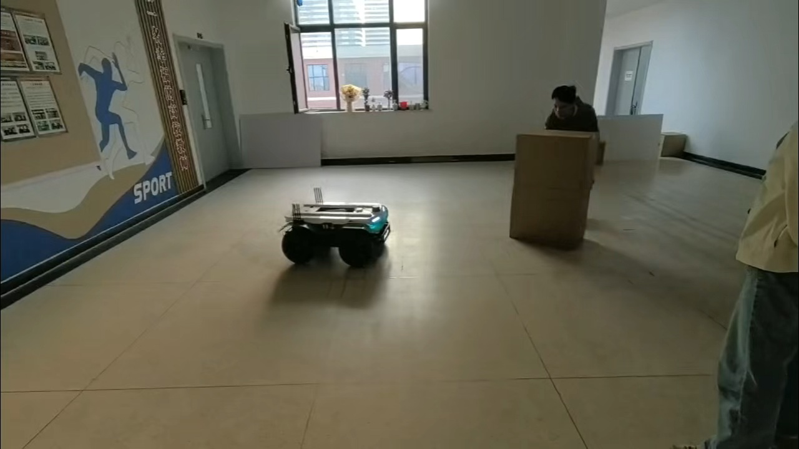
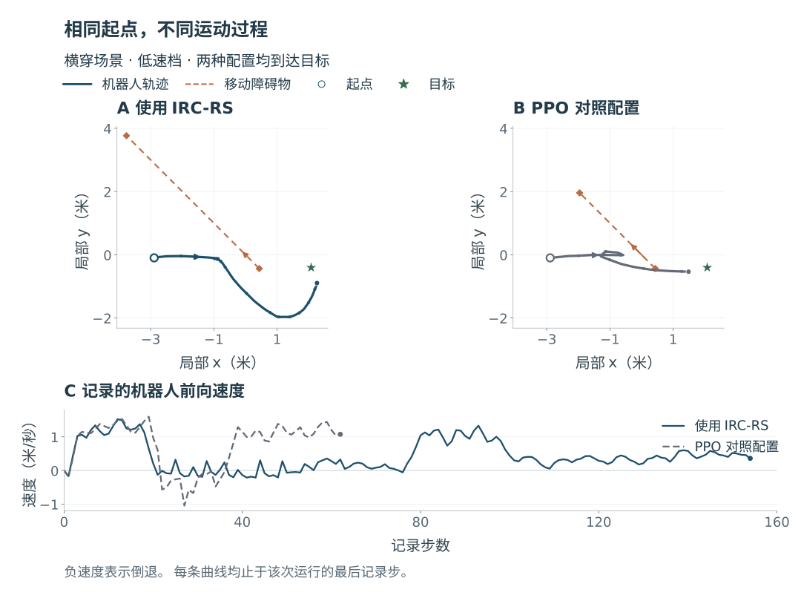

研究问题
机器人向目标前进时，移动障碍物可能恰好横穿它的路线。我希望训练奖励能够区分有效推进与增加碰撞风险的动作，并让策略有机会选择让行或绕行。
方法原理
在同一时刻，一条等风险线上的位置具有相同的风险值。借助这些轮廓，可以看出机器人前进或绕行时会经过怎样的风险区域。
- 机器人及行驶路径
- 障碍物及交会路径
- 示意等风险线
跨等风险线
风险时间演化
查看数学定义
图中的橙色轮廓示意同一时刻风险相等的位置。
- R(x, t) ≡ Φ_R(x, t)
- 工作空间位置 x 在时刻 t 的瞬时风险。
- λS、λΔ、λT ≥ 0
- 状态代价、跨等风险线、风险演化三项的非负权重。
- γ ∈ (0, 1]
- 势差项使用的折扣因子。
- [z]+ = max(z, 0)
- 只保留正部，使时间演化项惩罚风险上升。
- ∂t R(xt, t)
- 将机器人工作空间位置固定后，风险对时间的偏导数。
状态代价
rstate = −λS R(xt, t)
读取机器人当前位置的风险值；风险越高，状态代价越负。
跨等风险线
rcross = λΔ [R(xt, t)− γR(xt+1, t)]
将障碍物场景固定在 t，再比较下一位置；向内切入和沿线绕行两条分支从同一位置出发。
风险时间演化
revo = −λT [∂tR(xt, t)]+
机器人位置保持不变，让障碍物随时间移动；只惩罚风险的正时间导数，该项不给风险自然下降对称奖励。
沿同一条等风险线移动时，若 γ 接近 1，跨线项就接近零。γ = 1 时该项为零，向目标前进仍可获得进度奖励。
原理层的风险塑形rIRC-RS = rstate + rcross + revo
从激光测距到训练信号
ψ = σ((dsafe − dfront) / σd)
代码采用负势函数 Φ = −ψ，因此塑形信号为 γΦₜ − Φₜ₋₁ = ψₜ₋₁ − γψₜ。
实现比较相邻两次观测，风险变化可能同时包含机器人运动与障碍物运动的影响；这与上面分别固定环境、固定位置的原理比较有所区别。
真机演示
第一段录像展示差速移动机器人避让移动纸箱的过程。下方的受控实验可以按障碍物的来向，观察两种局部规划方法如何调整机器人的行进路线。

受控真机对比录像
IRC-RS 和动态窗口法（DWA）各有 36 段实机录像，每类场景各 12 段。每组选取同一来向的两次独立运行作对照。
可分别拖动进度条，对照机器人与障碍物相遇时的动作。
右前横穿
正面交汇
右前斜向
实验评估
评估关注机器人在动态交汇时，能否在前进、让行和绕行之间作出有效选择并到达目标。实机录像展示策略在人员移动纸箱障碍物时如何调整行进路线。
仿真评估
91.9%(248/270)
每种配置：3 类交互场景 × 3 档障碍速度 × 30 回合。
真机评估
91.7%(33/36)
每类交互场景 12 次真机试验，由人员移动纸箱障碍物。
| 仿真场景 | 使用 IRC-RS 的策略 | 对照 PPO 策略 |
|---|---|---|
| 全部交互场景 | 91.9% (248/270) | 30.0% (81/270) |
| 正面交汇 | 95.6% (86/90) | 25.6% (23/90) |
| 横穿 | 98.9% (89/90) | 24.4% (22/90) |
| 斜向切入 | 81.1% (73/90) | 40.0% (36/90) |
在另一组规划器评测中，动态窗口法（DWA）的成功率为 74.6%。


仿真与策略训练
我在 NVIDIA Isaac Lab 中搭建差速移动机器人导航环境，改变障碍布局、起点和目标位置，并围绕真实机器人配置传感与运动限制。
我围绕三种交会几何关系设计 TIB-3（Targeted Interaction Benchmark-3）。正面交汇考察对迎面障碍的响应，横穿关注何时让行或通过，斜向切入增加非轴对齐的接近方式。
我用 PPO 分三个阶段训练策略。机器人先学会到达目标，再学习绕开静态障碍，最后处理移动障碍物。
为了让策略感知运动，我把输入从 194 维扩展到 556 维。当前激光帧和机器人状态沿用已学权重，前两帧激光用当前帧的权重初始化，越早的帧初始权重越小。这样就能在已有静态导航策略上继续训练动态避障。

从仿真到真机
我将仿真训练完成的策略导出为 ONNX，通过 ONNX Runtime 和 ROS 接入真实差速移动机器人。激光重采样、历史帧、坐标转换与观测顺序沿用训练流程，再将策略输出映射为底盘线速度和角速度指令。
部署使用训练完成的策略，没有额外进行真机策略微调。执行层加入速度限幅和目标到达停车处理，并与原有定位、导航系统衔接。
我用 RViz 核对策略输入，并将速度指令与底盘反馈对应记录，沿传感预处理、策略输出和实际运动排查执行偏差。
仿真训练时
13 + 3 × 181 = 55613 维机器人/目标特征 + 三帧 LiDAR × 每帧 181 条射线
- 556 维策略输入
机器人状态、局部目标与三帧 LiDAR。
- 策略交互
选择 v、ω，并在仿真中执行。
用于学习的风险反馈
- 前向间距
按观测角度与远近对 LiDAR 距离加权。
- Sigmoid 风险 ψ
前向间距越小，风险分数越大。
- 风险塑形奖励
势差项鼓励降低风险。在高风险区停留或前冲会产生代价，此时向目标靠近带来的奖励也会减小。
PPO 结合这些反馈及任务、控制奖励，更新策略。
部署执行时
- 传感观测
相同的 556 维机器人、目标与 LiDAR 输入。
- 训练好的策略
将当前观测转换为速度动作。
- ROS 执行
执行线速度 v、角速度 ω，并接收传感反馈。
执行时，训练好的策略根据传感观测产生下一速度命令。
个人贡献
我提出 IRC-RS，将等风险线原理转化为基于激光观测的奖励信号，让策略在训练中权衡前进收益与进入高风险区域的代价。
我完成了从仿真策略到真实机器人的部署，通过 ONNX Runtime 和 ROS 统一观测与速度指令，并用 RViz 和指令—反馈日志排查执行偏差。
我构建 TIB-3，将总体成功率按交会几何关系和障碍速度拆开分析，用来定位机器人何时需要让行或绕行。